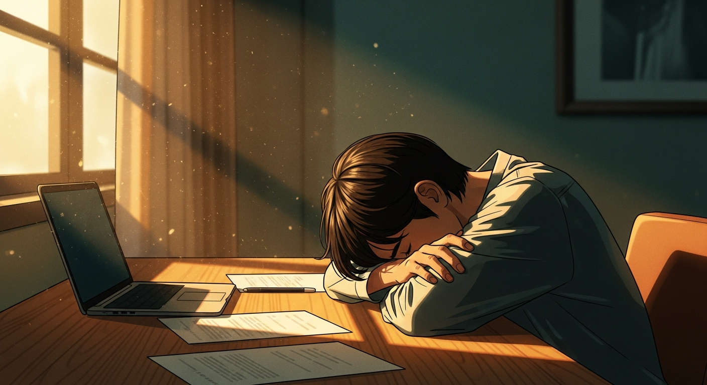

Burnout da lavoro: perché riposare non basta e cosa dice la tua energia
Riposi, stacchi, vai in vacanza e torni esausto come prima? Il problema potrebbe essere nel tipo di lavoro, non nella quantità. Ecco cosa cambia quando conosci il tuo tipo energetico.

Il burnout è diventato la diagnosi predefinita di chiunque sia stanco al lavoro, e la soluzione proposta è quasi sempre la stessa: stacca, riposa, prenditi una pausa. Il problema è che milioni di persone hanno provato esattamente questo e sono tornate alla scrivania con lo stesso identico esaurimento nel giro di due settimane, perché il riposo ricarica la batteria ma non cambia il circuito che la svuota.
Esiste una ragione biologica per cui due colleghi possono fare lo stesso lavoro, con le stesse ore e lo stesso carico, e uno dei due finisce a pezzi mentre l'altro arriva a sera ancora lucido. La differenza sta nel tipo energetico, una componente della meccanica individuale che il sistema Human Design mappa con precisione calcolabile dalla data, ora e luogo di nascita.
Perché il burnout colpisce alcune persone più di altre?
La risposta standard dice che dipende dal carico di lavoro, dal capo, dall'ambiente. Queste variabili contano, ma spiegano solo una parte del quadro. Se fosse solo questione di condizioni esterne, tutti quelli nelle stesse condizioni reagirebbero allo stesso modo, e chiaramente non è così.
Nel sistema Human Design esistono cinque tipi energetici, ciascuno con una meccanica diversa. Il Generatore e il Generatore Manifestante, che insieme rappresentano circa il 70% della popolazione, hanno un centro Sacrale definito: un motore biologico che si ricarica ogni notte e produce energia lavorativa sostenibile per tutto il giorno. Il loro burnout arriva quando usano questa energia su attività che la mente ha scelto ma che il corpo non riconosce come proprie, quando cioè lavorano su cose che non gli "risuonano" visceralmente.
Il Proiettore, che rappresenta circa il 20% della popolazione, non ha questo motore. La sua energia funziona in modo completamente diverso: è focalizzata, assorbente, progettata per guidare e dirigere gli altri piuttosto che per produrre in modo costante. Quando un Proiettore cerca di lavorare otto ore come un Generatore, il suo corpo si esaurisce in modi che il riposo del weekend non può compensare, perché sta usando un circuito che non possiede.
Cosa succede quando lavori contro la tua meccanica?
Ogni tipo energetico ha un segnale di disallineamento specifico. Per il Generatore è la frustrazione: quella sensazione di sforzo continuo senza soddisfazione, di arrivare a sera avendo fatto molto ma senza sentire che ne è valsa la pena. Per il Proiettore è l'amarezza: la percezione di dare più di quanto riceve, di essere invisibile nonostante la competenza, di esaurirsi per persone che non lo riconoscono.
Il Manifestatore, che rappresenta circa il 9% della popolazione, ha un'energia di impatto breve e potente. Il suo segnale di disallineamento è la rabbia, che emerge quando il mondo gli chiede di chiedere permesso prima di agire o lo costringe in strutture che limitano la sua capacità di iniziare. Il Riflettore, circa l'1%, amplifica l'energia di chi lo circonda e va in burnout quando l'ambiente stesso è tossico, perché il suo corpo funziona letteralmente come uno specchio energetico.
Ognuno di questi segnali racconta qualcosa di preciso su cosa non sta funzionando, e la risposta non è mai "riposa di più" ma piuttosto "cambia cosa stai facendo o come lo stai facendo".
Come funziona l'energia del Generatore rispetto a quella del Proiettore?
Il Generatore ha una batteria che si ricarica ogni notte e si scarica durante il giorno. La sua strategia corretta è rispondere agli stimoli della vita piuttosto che iniziare dal nulla: quando qualcosa lo attira visceralmente, il suo corpo produce l'energia per portarlo avanti per ore. Quando invece forza un progetto scelto dalla mente, l'energia scorre senza direzione e la frustrazione si accumula come un debito che il riposo non estingue.
Il Proiettore non ha questa batteria autonoma. La sua energia viene dall'esterno, dagli altri, dall'ambiente, e la sua aura è progettata per penetrare nel campo altrui e leggerlo con una precisione che i Generatori non hanno. Il suo contributo migliore è guidare, organizzare, dirigere, non produrre a ciclo continuo. Un Proiettore che lavora quattro ore al giorno nella modalità giusta produce più valore di un Proiettore che ne lavora otto nella modalità sbagliata, perché la qualità della sua guida dipende dall'energia disponibile per quella guida.
Il problema è che il mondo del lavoro è costruito intorno alla meccanica del Generatore: otto ore al giorno, cinque giorni alla settimana, produttività costante. Il 30% della popolazione che non funziona così (Proiettori, Manifestatori, Riflettori) finisce per adattarsi a un ritmo che non gli appartiene, con conseguenze che il sistema sanitario classifica come burnout generico senza distinguere la causa.
Cosa puoi fare concretamente?
Il primo passo è conoscere il tuo tipo energetico. La carta Human Design gratuita ti dice esattamente quale dei cinque tipi sei, quale strategia decisionale è corretta per te e quale segnale il tuo corpo ti manda quando stai operando fuori meccanica. Il calcolo richiede data, ora e luogo di nascita e si completa in pochi secondi.
Il secondo passo è osservare come stai usando la tua energia nella settimana lavorativa. Se sei un Generatore, nota i momenti in cui lavori con soddisfazione e quelli in cui la frustrazione cresce: la differenza ti dice dove il tuo corpo vuole andare e dove la mente lo sta forzando. Se sei un Proiettore, conta le ore effettive in cui la tua lucidità è al massimo e confrontale con le ore che passi a cercare di produrre come un Generatore.
Il terzo passo, per chi vuole andare in profondità, è una sessione individuale dove si analizza l'intera configurazione energetica: non solo il tipo, ma anche l'Autorità Interiore (come il tuo corpo prende le decisioni migliori), il Profilo (il tuo ruolo nella vita) e i centri definiti e aperti che determinano quali energie sono tue e quali stai assorbendo dall'esterno. Questa mappa cambia il modo in cui organizzi il lavoro, scegli i progetti e gestisci le relazioni professionali.
Domande Frequenti
Perché il riposo non risolve il burnout?
Il riposo ricarica la batteria, ma se torni a fare lo stesso lavoro con la stessa modalità, la batteria si scarica alla stessa velocità. Il burnout cronico indica un disallineamento strutturale tra la tua energia biologica e il modo in cui lavori, non una semplice stanchezza da risolvere con una vacanza.
Come faccio a sapere qual è il mio tipo energetico?
Il tipo energetico si calcola dalla data, ora e luogo di nascita attraverso la carta Human Design. Esistono cinque tipi: Manifestatore, Generatore, Generatore Manifestante, Proiettore e Riflettore. Puoi calcolare la tua carta gratuitamente su valentinarussobg5.com/calcolo-human-design.
Il burnout del Proiettore è diverso da quello del Generatore?
Sì. Il Generatore ha energia rinnovabile ma va in burnout quando lavora su attività sbagliate che non gli risuonano. Il Proiettore non ha energia sacrale propria: va in burnout quando cerca di sostenere il ritmo lavorativo di un Generatore, cosa che il suo corpo non è progettato per fare.
Conoscere il proprio tipo energetico può davvero cambiare il rapporto col lavoro?
Conoscere il tipo energetico permette di capire quante ore puoi sostenere, quale ritmo è corretto per te, e soprattutto come il tuo corpo prende le decisioni migliori. Chi applica queste informazioni al proprio lavoro riporta una riduzione significativa dello stress e un aumento della soddisfazione professionale.
Vuoi portare il BG5® nella tua azienda?
Se vuoi capire come si applica alla tua realtà, scopri i servizi disponibili. Se sai già cosa cerchi, prenota una consulenza diretta.
Continua a leggere

Ansia da decisione: perché non riesci a scegliere e come uscirne
Ti blocchi davanti alle decisioni importanti? L'ansia da scelta ha una causa precisa: stai usando la mente per decidere …
Leggi articolo →
Come aspettare l'invito senza perdere lo slancio professionale
Se sei una Guida e senti che aspettare l'invito ti blocca la carriera, questo articolo ti mostra come affinare la tua fr…
Leggi articolo →
Assumere la persona sbagliata costa 30.000 euro: un metodo per non sbagliare
Un'assunzione sbagliata costa 6-9 mesi di stipendio. Il curriculum non ti dice come la persona gestisce lo stress, prend…
Leggi articolo →
BG5: perché attiri certi clienti (e come smettere di sbagliarti)
Stai attirando clienti sbagliati? Con il BG5 scopri la meccanica reale dietro la tua clientela e come la coerenza cambia…
Leggi articolo →